[Toàn Chương] LM04 — Learning Module 4 Probability Trees and Conditional Expectations
Volume 1: Quantitative Methods
Learning Module 4 Probability Trees and Conditional Expectations
Part 1/2: Introduction (PDF Pages 139–146)
Tập 1: Phương pháp Định lượng (Quantitative Methods)
Học phần 4: Cây Xác suất và Kỳ vọng Có điều kiện (Probability Trees and Conditional Expectations)
Phần 1/2: Giới thiệu (Trang PDF 139–146)
L E A R N I N G M O D U L E
H Ọ C P H Ầ N
4
4
Probability Trees and Conditional Expectations
Cây Xác suất và Kỳ vọng Có điều kiện (Probability Trees and Conditional Expectations)
by Richard A. DeFusco, PhD, CFA, Dennis W. McLeavey, DBA, CFA, Jerald E. Pinto, PhD, CFA, and David E. Runkle, PhD, CFA.
Tác giả: Richard A. DeFusco, PhD, CFA, Dennis W. McLeavey, DBA, CFA, Jerald E. Pinto, PhD, CFA, và David E. Runkle, PhD, CFA.
Richard A. DeFusco, PhD, CFA, is at the University of Nebraska-Lincoln (USA). Dennis W. McLeavey, DBA, CFA, is at the University of Rhode Island (USA). Jerald E. Pinto, PhD, CFA, is at CFA Institute (USA). David E. Runkle, PhD, CFA, is at Jacobs Levy Equity Management (USA).
Richard A. DeFusco, PhD, CFA, công tác tại Đại học Nebraska-Lincoln (Hoa Kỳ). Dennis W. McLeavey, DBA, CFA, công tác tại Đại học Rhode Island (Hoa Kỳ). Jerald E. Pinto, PhD, CFA, công tác tại Viện CFA (Hoa Kỳ). David E. Runkle, PhD, CFA, công tác tại Jacobs Levy Equity Management (Hoa Kỳ).
LEARNING OUTCOMES
MỤC TIÊU HỌC TẬP (LEARNING OUTCOMES)
Mastery The candidate should be able to:
Mức độ thành thạo — Ứng viên cần có khả năng:
- calculate expected values, variances, and standard deviations and demonstrate their application to investment problems formulate an investment problem as a probability tree and explain the use of conditional expectations in investment application calculate and interpret an updated probability in an investment setting using Bayes’ formula
- tính toán giá trị kỳ vọng (expected values), phương sai (variances), và độ lệch chuẩn (standard deviations) cũng như trình bày ứng dụng của chúng vào các bài toán đầu tư
- thiết lập một bài toán đầu tư dưới dạng cây xác suất (probability tree) và giải thích việc sử dụng các kỳ vọng có điều kiện (conditional expectations) trong ứng dụng đầu tư
- tính toán và diễn giải xác suất cập nhật (updated probability) trong bối cảnh đầu tư bằng cách sử dụng công thức Bayes (Bayes’ formula)

INTRODUCTION
GIỚI THIỆU (INTRODUCTION)
Investment decisions are made under uncertainty about the future direction of the economy, issuers, companies, and prices. This learning module presents probability tools that address many real-world problems involving uncertainty and applies to a variety of investment management applications.
Các quyết định đầu tư được đưa ra trong điều kiện không chắc chắn về hướng đi tương lai của nền kinh tế, các tổ chức phát hành, các công ty và giá cả. Học phần này trình bày các công cụ xác suất giúp giải quyết nhiều bài toán thực tế liên quan đến sự không chắc chắn và được áp dụng cho nhiều ứng dụng quản lý đầu tư đa dạng.
Lesson 1 introduces the calculation of the expected value, variance, and standard deviation for a random variable. These are essential quantitative concepts in investment management. Lesson 2 introduces probability trees that help in visualizing the conditional expectations and the total probabilities for expected value.
Bài học 1 giới thiệu cách tính giá trị kỳ vọng, phương sai và độ lệch chuẩn đối với một biến ngẫu nhiên. Đây là những khái niệm định lượng thiết yếu trong quản lý đầu tư. Bài học 2 giới thiệu cây xác suất giúp trực quan hóa các kỳ vọng có điều kiện và quy tắc xác suất toàn phần cho giá trị kỳ vọng.
When making investment decisions, analysts often rely on perspectives, which may be influenced by subsequent observations. Lesson 3 introduces Bayes’ formula, a rational method to adjust probabilities with the arrival of new information. This method has wide business and investment applications.
Khi đưa ra các quyết định đầu tư, các chuyên viên phân tích thường dựa vào các quan điểm nhìn nhận, vốn có thể chịu ảnh hưởng bởi các quan sát tiếp theo. Bài học 3 giới thiệu công thức Bayes, một phương pháp hợp lý để điều chỉnh các xác suất khi có thông tin mới xuất hiện. Phương pháp này có ứng dụng rộng rãi trong kinh doanh và đầu tư.
LEARNING MODULE OVERVIEW
TỔNG QUAN HỌC PHẦN (LEARNING MODULE OVERVIEW)
-
The expected value of a random variable is a probability-weighted average of the possible outcomes of the random variable. For a random variable X , the expected value of X is denoted E ( X ).
-
The variance of a random variable is the expected value (the probability-weighted average) of squared deviations from the random variable’s expected value E ( X ): σ2 ( X ) = E {[ X − E ( X )]2 }, where σ2 ( X ) stands for the variance of X .
-
Standard deviation is the positive square root of variance. Standard deviation measures dispersion (as does variance), but it is measured in the same units as the variable.
-
A probability tree is a means of illustrating the results of two or more independent events.
-
A probability of an event given (conditioned on) another event is a conditional probability. The probability of an event A given an event B is denoted P ( A | B ), and P ( A | B ) = P ( AB )/ P ( B ), P ( B ) ≠ 0.
-
According to the total probability rule, if S 1, S 2, …, Sn are mutually exclusive and exhaustive scenarios or events, then P ( A ) = P ( A | S 1) P ( S 1) + P ( A | S 2) P ( S 2) + … + P ( A | Sn ) P ( Sn ).
-
Conditional expected value is E ( X | S ) = P ( X 1 | S ) X 1 + P ( X 2 | S ) X 2 + … + P (Xn | S )Xn and has an associated conditional variance and conditional standard deviation.
-
Bayes’ formula is a method used to update probabilities based on new information.
-
Bayes’ formula is expressed as follows: Updated probability of event given the new information = [(Probability of the new information given event)/(Unconditional probability of the new information)] × Prior probability of event.
-
Giá trị kỳ vọng của một biến ngẫu nhiên (expected value of a random variable) là trung bình có trọng số xác suất của các kết quả có thể xảy ra của biến ngẫu nhiên đó. Đối với một biến ngẫu nhiên $X$, giá trị kỳ vọng của $X$ được ký hiệu là $E(X)$.
-
Phương sai của một biến ngẫu nhiên (variance of a random variable) là giá trị kỳ vọng (trung bình có trọng số xác suất) của các bình phương độ lệch so với giá trị kỳ vọng $E(X)$ của biến ngẫu nhiên đó: $\sigma^2(X) = E\{[X - E(X)]^2\}$, trong đó $\sigma^2(X)$ biểu thị phương sai của $X$.
-
Độ lệch chuẩn (standard deviation) là căn bậc hai dương của phương sai. Độ lệch chuẩn đo lường độ phân tán (giống như phương sai), nhưng được đo bằng cùng đơn vị với biến số đó.
-
Cây xác suất (probability tree) là một phương tiện minh họa kết quả của hai hay nhiều biến cố độc lập hoặc nối tiếp nhau.
-
Xác suất của một biến cố khi biết (với điều kiện) một biến cố khác là xác suất có điều kiện (conditional probability). Xác suất của một biến cố $A$ khi biết biến cố $B$ được ký hiệu là $P(A | B)$, và $P(A | B) = P(AB) / P(B)$, với $P(B) \ne 0$.
-
Theo quy tắc xác suất toàn phần (total probability rule), nếu $S_1, S_2, \dots, S_n$ là các kịch bản hoặc biến cố xung khắc và đầy đủ (mutually exclusive and exhaustive), thì $P(A) = P(A | S_1)P(S_1) + P(A | S_2)P(S_2) + \dots + P(A | S_n)P(S_n)$.
-
Giá trị kỳ vọng có điều kiện (conditional expected value) là $E(X | S) = P(X_1 | S)X_1 + P(X_2 | S)X_2 + \dots + P(X_n | S)X_n$ và có phương sai có điều kiện cũng như độ lệch chuẩn có điều kiện đi kèm.
-
Công thức Bayes (Bayes’ formula) là một phương pháp được sử dụng để cập nhật các xác suất dựa trên thông tin mới.
-
Công thức Bayes được biểu diễn như sau: Xác suất cập nhật của biến cố khi biết thông tin mới = [(Xác suất của thông tin mới khi biết biến cố) / (Xác suất vô điều kiện của thông tin mới)] $\times$ Xác suất tiên nghiệm của biến cố.

EXPECTED VALUE AND VARIANCE
GIÁ TRỊ KỲ VỌNG VÀ PHƯƠNG SAI (EXPECTED VALUE AND VARIANCE)
calculate expected values, variances, and standard deviations and demonstrate their application to investment problems
tính toán giá trị kỳ vọng, phương sai và độ lệch chuẩn cũng như trình bày ứng dụng của chúng vào các bài toán đầu tư
The expected value of a random variable is an essential quantitative concept in investments. Investors continually make use of expected values—in estimating the rewards of alternative investments, in forecasting earnings per share (EPS) and other corporate financial variables and ratios, and in assessing any other factor that may affect their financial position. The expected value of a random variable is the probability-weighted average of the possible outcomes of the random variable. For a random variable X , the expected value of X is denoted E ( X ).
Giá trị kỳ vọng của một biến ngẫu nhiên là một khái niệm định lượng thiết yếu trong đầu tư. Các nhà đầu tư liên tục sử dụng các giá trị kỳ vọng—trong việc ước tính phần thưởng của các khoản đầu tư thay thế, trong việc dự báo thu nhập trên mỗi cổ phần (EPS) cùng các biến số và tỷ số tài chính doanh nghiệp khác, cũng như trong việc đánh giá bất kỳ yếu tố nào khác có thể ảnh hưởng đến vị thế tài chính của họ. Giá trị kỳ vọng của một biến ngẫu nhiên (expected value of a random variable) là trung bình có trọng số xác suất của các kết quả có thể xảy ra của biến ngẫu nhiên đó. Đối với một biến ngẫu nhiên $X$, giá trị kỳ vọng của $X$ được ký hiệu là $E(X)$.
Expected value (e.g., expected stock return) looks either to the future, as a forecast, or to the “true” value of the mean (the population mean). We should distinguish expected value from the concepts of historical or sample mean. The sample mean also
Giá trị kỳ vọng (ví dụ: tỷ suất sinh lợi cổ phiếu kỳ vọng) hướng tới tương lai, như một dự báo, hoặc hướng tới giá trị “thực” của mức trung bình (trung bình tổng thể – population mean). Chúng ta cần phân biệt giá trị kỳ vọng với các khái niệm trung bình lịch sử hay trung bình mẫu (sample mean). Trung bình mẫu cũng
summarizes in a single number a central value. However, the sample mean presents a central value for a particular set of observations as an equally weighted average of those observations. In sum, the contrast is forecast versus historical, or population versus sample.
tóm tắt một giá trị trung tâm bằng một con số duy nhất. Tuy nhiên, trung bình mẫu trình bày một giá trị trung tâm cho một tập hợp các quan sát cụ thể dưới dạng trung bình có trọng số bằng nhau của các quan sát đó. Tóm lại, sự đối lập ở đây là giữa dự báo so với lịch sử, hay giữa tổng thể so với mẫu.
An equation that summarizes the calculation of the expected value for a discrete random variable X is as follows:
Phương trình tóm tắt cách tính giá trị kỳ vọng cho một biến ngẫu nhiên rời rạc (discrete random variable) $X$ như sau:

where Xi is one of n possible outcomes of the discrete random variable X .
trong đó $X_i$ là một trong $n$ kết quả có thể xảy ra của biến ngẫu nhiên rời rạc $X$.
The expected value is our forecast. Because we are discussing random quantities, we cannot count on an individual forecast being realized (although we hope that, on average, forecasts will be accurate). It is important, as a result, to measure the risk we face. Variance and standard deviation measure the dispersion of outcomes around the expected value or forecast.
Giá trị kỳ vọng chính là dự báo của chúng ta. Bởi vì chúng ta đang thảo luận về các đại lượng ngẫu nhiên, chúng ta không thể trông cậy vào việc một dự báo riêng lẻ sẽ trở thành hiện thực (mặc dù chúng ta hy vọng rằng, xét về trung bình, các dự báo sẽ chính xác). Do đó, điều quan trọng là phải đo lường rủi ro mà chúng ta phải đối mặt. Phương sai và độ lệch chuẩn đo lường độ phân tán của các kết quả xung quanh giá trị kỳ vọng hay dự báo.
The variance of a random variable is the expected value (the probability-weighted average) of squared deviations from the random variable’s expected value:
Phương sai của một biến ngẫu nhiên (variance of a random variable) là giá trị kỳ vọng (trung bình có trọng số xác suất) của các bình phương độ lệch so với giá trị kỳ vọng của biến ngẫu nhiên đó:

The two notations for variance are σ2 ( X ) and Var( X ).
Hai cách ký hiệu cho phương sai là $\sigma^2(X)$ và $\text{Var}(X)$.
Variance is a number greater than or equal to 0 because it is the sum of squared terms. If variance is 0, there is no dispersion or risk. The outcome is certain, and the quantity X is not random at all. Variance greater than 0 indicates dispersion of outcomes. Increasing variance indicates increasing dispersion, all else being equal.
Phương sai là một số lớn hơn hoặc bằng 0 vì nó là tổng của các số hạng bình phương. Nếu phương sai bằng 0, không có sự phân tán hay rủi ro nào cả. Kết quả là chắc chắn, và đại lượng $X$ hoàn toàn không phải là ngẫu nhiên. Phương sai lớn hơn 0 cho thấy có sự phân tán của các kết quả. Phương sai càng tăng cho thấy độ phân tán càng lớn, khi các yếu tố khác không đổi.
The following equation summarizes the calculation of variance:
Phương trình sau đây tóm tắt cách tính phương sai:

where Xi is one of n possible outcomes of the discrete random variable X .
trong đó $X_i$ là một trong $n$ kết quả có thể xảy ra của biến ngẫu nhiên rời rạc $X$.
Variance of X is a quantity in the squared units of X . For example, if the random variable is return in percent, variance of return is in units of percent squared. Standard deviation is easier to interpret than variance because it is in the same units as the random variable. Standard deviation is the square root of variance. If the random variable is return in percent, standard deviation of return is also in units of percent. In the following examples, when the variance of returns is stated as a percent or amount of money, to conserve space, we may suppress showing the unit squared.
Phương sai của $X$ là một đại lượng tính bằng đơn vị bình phương của $X$. Ví dụ, nếu biến ngẫu nhiên là tỷ suất sinh lợi tính bằng phần trăm, thì phương sai của tỷ suất sinh lợi có đơn vị là phần trăm bình phương. Độ lệch chuẩn dễ diễn giải hơn phương sai vì nó có cùng đơn vị với biến ngẫu nhiên. Độ lệch chuẩn (Standard deviation) là căn bậc hai của phương sai. Nếu biến ngẫu nhiên là tỷ suất sinh lợi tính bằng phần trăm, thì độ lệch chuẩn của tỷ suất sinh lợi cũng có đơn vị là phần trăm. Trong các ví dụ tiếp theo, khi phương sai của tỷ suất sinh lợi được nêu dưới dạng phần trăm hoặc số tiền, để tiết kiệm không gian trình bày, chúng ta có thể lược bỏ việc hiển thị đơn vị bình phương.
The best way to become familiar with these concepts is to work examples.
Cách tốt nhất để làm quen với các khái niệm này là thực hành qua các ví dụ.
EXAMPLE 1
VÍ DỤ 1
BankCorp’s Earnings per Share, Part 1
Thu nhập trên mỗi Cổ phần (EPS) của BankCorp, Phần 1 (BankCorp’s Earnings per Share, Part 1)
As part of your work as a banking industry analyst, you build models for forecasting earnings per share of the banks you cover. Today you are studying BankCorp. In Exhibit 1, you have recorded a probability distribution for BankCorp’s EPS for the current fiscal year.
Là một phần công việc của chuyên viên phân tích ngành ngân hàng, bạn xây dựng các mô hình dự báo thu nhập trên mỗi cổ phần (EPS) của các ngân hàng mà bạn phụ trách. Hôm nay bạn đang nghiên cứu BankCorp. Trong Bảng minh họa 1, bạn đã ghi lại một phân phối xác suất cho EPS của BankCorp trong năm tài chính hiện tại.
Exhibit 1: Probability Distribution for BankCorp’s EPS
Bảng minh họa 1: Phân phối Xác suất cho EPS của BankCorp (Probability Distribution for BankCorp’s EPS)
| Probability | EPS (USD) |
|---|---|
| 0.15 | 2.60 |
| 0.45 | 2.45 |
| 0.24 | 2.20 |
| Xác suất (Probability) | EPS (USD) |
|---|---|
| 0.15 | 2.60 |
| 0.45 | 2.45 |
| 0.24 | 2.20 |
| Probability | EPS (USD) |
|---|---|
| 0.16 | 2.00 |
| 1.00 |
| Xác suất (Probability) | EPS (USD) |
|---|---|
| 0.16 | 2.00 |
| 1.00 |
- What is the expected value of BankCorp’s EPS for the current fiscal year? Solution:
- Giá trị kỳ vọng của EPS của BankCorp cho năm tài chính hiện tại là bao nhiêu?
Following the definition of expected value, list each outcome, weight it by its probability, and sum the terms.
E (EPS) = 0.15(USD2.60) + 0.45(USD 2.45) + 0.24(USD 2.20) + 0.16(USD 2.00)
Lời giải:
- = USD2.3405
Theo định nghĩa về giá trị kỳ vọng, hãy liệt kê từng kết quả, nhân trọng số với xác suất của nó, và cộng các số hạng lại với nhau.
The expected value of EPS is USD2.34.
Giá trị kỳ vọng của EPS là USD 2.34.
- Using the probability distribution of EPS from Exhibit 1, you want to measure the dispersion around your forecast. What are the variance and standard deviation of BankCorp’s EPS for the current fiscal year?
- Sử dụng phân phối xác suất của EPS từ Bảng minh họa 1, bạn muốn đo lường độ phân tán xung quanh dự báo của mình. Phương sai và độ lệch chuẩn của EPS của BankCorp cho năm tài chính hiện tại là bao nhiêu?
Solution:
The order of calculation is always expected value, then variance, and then standard deviation. Expected value has already been calculated. Following the previous definition of variance, calculate the deviation of each outcome from the mean or expected value, square each deviation, weight (multiply) each squared deviation by its probability of occurrence, and then sum these terms.
Lời giải:
- σ2( EPS) = P( 2.60) [2.60 − E( EPS) ]2 + P( 2.45) [2.45 − E( EPS) ]2 + P( 2.20) [2.20 − E( EPS) ]2 + P( 2.00) [2.00 − E( EPS) ]2 = 0.15( 2.60 − 2.34)2 + 0.45( 2.45 − 2.34)2 + 0.24( 2.20 − 2.34)2 + 0.16( 2.00 − 2.34)2 = 0.01014 + 0.005445 + 0.004704 + 0.018496 = 0.038785
Thứ tự tính toán luôn là giá trị kỳ vọng trước, sau đó đến phương sai, rồi đến độ lệch chuẩn. Giá trị kỳ vọng đã được tính ở trên. Theo định nghĩa về phương sai trước đó, hãy tính độ lệch của từng kết quả so với giá trị trung bình hay giá trị kỳ vọng, bình phương từng độ lệch, nhân trọng số từng bình phương độ lệch với xác suất xảy ra của nó, và sau đó cộng các số hạng này lại.
Standard deviation is the positive square root of 0.038785:
Độ lệch chuẩn là căn bậc hai dương của 0.038785:
σ(EPS) = 0.0387851/2 = 0.196939, or approximately 0.20.
3
3
PROBABILITY TREES AND CONDITIONAL EXPECTATIONS
CÂY XÁC SUẤT VÀ KỲ VỌNG CÓ ĐIỀU KIỆN (PROBABILITY TREES AND CONDITIONAL EXPECTATIONS)
formulate an investment problem as a probability tree and explain the use of conditional expectations in investment application
thiết lập một bài toán đầu tư dưới dạng cây xác suất và giải thích việc sử dụng các kỳ vọng có điều kiện trong ứng dụng đầu tư
In investments, we make use of any relevant information available in making our forecasts. When we refine our expectations or forecasts, we are typically updating them based on new information or events; in these cases, we are using conditional expected values . The expected value of a random variable X given an event or scenario S is denoted E ( X | S ). Suppose the random variable X can take on any one of n distinct
Trong đầu tư, chúng ta tận dụng mọi thông tin có liên quan hiện có khi đưa ra dự báo. Khi tinh chỉnh các kỳ vọng hoặc dự báo của mình, chúng ta thường cập nhật chúng dựa trên thông tin hoặc biến cố mới; trong những trường hợp này, chúng ta đang sử dụng các giá trị kỳ vọng có điều kiện (conditional expected values). Giá trị kỳ vọng của một biến ngẫu nhiên $X$ khi biết một biến cố hoặc kịch bản $S$ được ký hiệu là $E(X | S)$. Giả sử biến ngẫu nhiên $X$ có thể nhận bất kỳ giá trị nào trong số $n$ kết quả riêng biệt
outcomes X 1, X 2, …, Xn (these outcomes form a set of mutually exclusive and exhaustive events). The expected value of X conditional on S is the first outcome, X 1, times the probability of the first outcome given S, P ( X 1 | S ), plus the second outcome, X 2, times the probability of the second outcome given S, P ( X 2 | S ), and so forth, as follows:
$X_1, X_2, \dots, X_n$ (các kết quả này tạo thành một tập hợp các biến cố xung khắc và đầy đủ). Giá trị kỳ vọng của $X$ với điều kiện $S$ bằng kết quả thứ nhất, $X_1$, nhân với xác suất của kết quả thứ nhất khi biết $S$, $P(X_1 | S)$, cộng với kết quả thứ hai, $X_2$, nhân với xác suất của kết quả thứ hai khi biết $S$, $P(X_2 | S)$, và cứ tiếp tục như vậy như sau:
E ( X | S ) = P ( X 1 | S ) X 1 + P ( X 2 | S ) X 2 + … + P (Xn | S )Xn. ~~(4)~~
We will illustrate this equation shortly.
Chúng ta sẽ minh họa phương trình này ngay sau đây.
Parallel to the total probability rule for stating unconditional probabilities in terms of conditional probabilities, there is a principle for stating (unconditional) expected values in terms of conditional expected values. This principle is the total probability rule for expected value .
Song song với quy tắc xác suất toàn phần dùng để biểu diễn các xác suất vô điều kiện theo các xác suất có điều kiện, có một nguyên lý dùng để biểu diễn các giá trị kỳ vọng (vô điều kiện) theo các giá trị kỳ vọng có điều kiện. Nguyên lý này là quy tắc xác suất toàn phần cho giá trị kỳ vọng (total probability rule for expected value).
Total Probability Rule for Expected Value
Quy tắc Xác suất Toàn phần cho Giá trị Kỳ vọng (Total Probability Rule for Expected Value)
The formula follows:
Công thức như sau:

where SC is the “complement of S,” which means event or scenario “S” does not occur. E ( X ) = E ( X | S 1) P ( S 1) + E ( X | S 2) P ( S 2) + … + E ( X | Sn) P (Sn), ~~(6)~~
trong đó $S^C$ là “phần bù của $S$” (complement of $S$), có nghĩa là biến cố hoặc kịch bản “$S$” không xảy ra.
trong đó $S_1, S_2, \dots, S_n$ là các kịch bản hoặc biến cố xung khắc và đầy đủ (mutually exclusive and exhaustive).
where S 1, S 2, …, Sn are mutually exclusive and exhaustive scenarios or events.
The general case, Equation 6, states that the expected value of X equals the expected value of X given Scenario 1, E ( X | S 1), times the probability of Scenario 1, P ( S 1), plus the expected value of X given Scenario 2, E ( X | S 2), times the probability of Scenario 2, P ( S 2), and so forth.
Trường hợp tổng quát, Phương trình 6, phát biểu rằng giá trị kỳ vọng của $X$ bằng giá trị kỳ vọng của $X$ khi biết Kịch bản 1, $E(X | S_1)$, nhân với xác suất của Kịch bản 1, $P(S_1)$, cộng với giá trị kỳ vọng của $X$ khi biết Kịch bản 2, $E(X | S_2)$, nhân với xác suất của Kịch bản 2, $P(S_2)$, và cứ tiếp tục như vậy.
To use this principle, we formulate mutually exclusive and exhaustive scenarios that are useful for understanding the outcomes of the random variable. This approach was employed in developing the probability distribution of BankCorp’s EPS in Example 1, as we now discuss.
Để sử dụng nguyên lý này, chúng ta xây dựng các kịch bản xung khắc và đầy đủ hữu ích cho việc tìm hiểu các kết quả của biến ngẫu nhiên. Cách tiếp cận này đã được áp dụng khi xây dựng phân phối xác suất cho EPS của BankCorp trong Ví dụ 1, như chúng ta sẽ thảo luận ngay bây giờ.
EXAMPLE 2
VÍ DỤ 2
BankCorp’s Earnings per Share, Part 2
Thu nhập trên mỗi Cổ phần (EPS) của BankCorp, Phần 2 (BankCorp’s Earnings per Share, Part 2)
The earnings of BankCorp are interest rate sensitive, benefiting from a declining interest rate environment. Suppose there is a 0.60 probability that BankCorp will operate in a declining interest rate environment in the current fiscal year and a 0.40 probability that it will operate in a stable interest rate environment (assessing the chance of an increasing interest rate environment as negligible). If a declining interest rate environment occurs, the probability that EPS will be USD2.60 is estimated at 0.25, and the probability that EPS will be USD2.45 is estimated at 0.75. Note that 0.60, the probability of declining interest rate environment, times 0.25, the probability of USD2.60 EPS given a declining interest rate environment, equals 0.15, the (unconditional) probability of USD2.60 given in the table in Exhibit 1. The probabilities are consistent. Also, 0.60(0.75) = 0.45, the probability of USD2.45 EPS given in Exhibit 1. The probability tree diagram in Exhibit 2 shows the rest of the analysis.
Thu nhập của BankCorp nhạy cảm với lãi suất, được hưởng lợi từ môi trường lãi suất giảm. Giả sử có xác suất 0.60 là BankCorp sẽ hoạt động trong môi trường lãi suất giảm (declining interest rate environment) trong năm tài chính hiện tại và xác suất 0.40 là ngân hàng sẽ hoạt động trong môi trường lãi suất ổn định (stable interest rate environment) (đánh giá khả năng xảy ra môi trường lãi suất tăng là không đáng kể). Nếu môi trường lãi suất giảm xảy ra, xác suất để EPS đạt USD 2.60 được ước tính là 0.25, và xác suất để EPS đạt USD 2.45 được ước tính là 0.75. Lưu ý rằng 0.60, xác suất của môi trường lãi suất giảm, nhân với 0.25, xác suất EPS đạt USD 2.60 khi biết môi trường lãi suất giảm, bằng 0.15, chính là xác suất (vô điều kiện) của mức USD 2.60 được cho trong bảng ở Bảng minh họa 1. Các xác suất này hoàn toàn nhất quán với nhau. Tương tự, $0.60(0.75) = 0.45$, chính là xác suất của mức EPS USD 2.45 được cho trong Bảng minh họa 1. Sơ đồ cây xác suất (probability tree diagram) trong Bảng minh họa 2 cho thấy phần còn lại của phân tích này.
Exhibit 2: BankCorp’s Forecasted EPS
Bảng minh họa 2: EPS Dự báo của BankCorp (BankCorp’s Forecasted EPS)

Chú thích hình ảnh: - Gốc cây: $E(\text{EPS}) = \$2.34$ - Nhánh trên: Xác suất lãi suất giảm (Prob. of declining interest rates) = 0.60: - Nhánh con 1 (0.25): $\text{EPS} = \$2.60$ với Xác suất (Prob) = 0.15 - Nhánh con 2 (0.75): $\text{EPS} = \$2.45$ với Xác suất (Prob) = 0.45 - Nhánh dưới: Xác suất lãi suất ổn định (Prob. of stable interest rates) = 0.40: - Nhánh con 1 (0.60): $\text{EPS} = \$2.20$ với Xác suất (Prob) = 0.24 - Nhánh con 2 (0.40): $\text{EPS} = \$2.00$ với Xác suất (Prob) = 0.16
A declining interest rate environment points us to the node of the tree that branches off into outcomes of USD2.60 and USD2.45. We can find expected EPS given a declining interest rate environment as follows, using Equation 6:
Môi trường lãi suất giảm dẫn chúng ta đến nút (node) của cây rẽ nhánh thành các kết quả USD 2.60 và USD 2.45. Chúng ta có thể tìm EPS kỳ vọng khi biết môi trường lãi suất giảm như sau, sử dụng Phương trình 4:
-
E (EPS | declining interest rate environment )
-
= 0.25(USD2.60) + 0.75(USD2.45)
-
= USD2.4875
If interest rates are stable,
Nếu lãi suất ổn định,
E (EPS | stable interest rate environment ) = 0.60(USD2.20) + 0.40(USD2.00)
- = USD2.12
Ví dụ, một khi chúng ta có thông tin mới rằng lãi suất ổn định, chúng ta sẽ điều chỉnh giảm kỳ vọng ban đầu về EPS từ USD 2.34 xuống còn USD 2.12. Bây giờ, sử dụng quy tắc xác suất toàn phần cho giá trị kỳ vọng:
Once we have the new piece of information that interest rates are stable, for example, we revise our original expectation of EPS from USD2.34 downward to USD2.12. Now using the total probability rule for expected value,
E( EPS)
= E (EPS | declining interest rate environment) P(declining interest rate environment) + E (EPS | stable interest rate environment) P(stable interest rate environment)
Do đó, $E(\text{EPS}) = \text{USD } 2.4875(0.60) + \text{USD } 2.12(0.40) = \text{USD } 2.3405$ hay khoảng USD 2.34.
So, E (EPS) = USD2.4875(0.60) + USD2.12(0.40) = USD2.3405 or about USD2.34.
Con số này hoàn toàn trùng khớp với ước lượng giá trị kỳ vọng của EPS được tính trực tiếp từ phân phối xác suất trong Ví dụ 1. Cũng giống như các xác suất của chúng ta phải nhất quán, các giá trị kỳ vọng vô điều kiện và có điều kiện của chúng ta cũng phải nhất quán; nếu không, các hành động đầu tư của chúng ta có thể tạo ra cơ hội kiếm lời cho các nhà đầu tư khác mà phần thiệt thuộc về chúng ta.
This amount is identical to the estimate of the expected value of EPS calculated directly from the probability distribution in Example 1. Just as our probabilities must be consistent, so too must our expected values, unconditional and conditional, be consistent; otherwise, our investment actions may create profit opportunities for other investors at our expense.
Để ôn lại, trước tiên chúng ta đã xây dựng các yếu tố hoặc kịch bản ảnh hưởng đến kết quả của biến cố đang quan tâm. Sau khi gán xác suất cho các kịch bản này, chúng ta hình thành các kỳ vọng có điều kiện dựa trên các kịch bản khác nhau đó. Sau đó, chúng ta tính ngược lại để thiết lập một giá trị kỳ vọng tại thời điểm ngày hôm nay. Trong bài toán vừa giải quyết, EPS là biến cố được quan tâm, và môi trường lãi suất là yếu tố ảnh hưởng đến EPS.
To review, we first developed the factors or scenarios that influence the outcome of the event of interest. After assigning probabilities to these scenarios, we formed expectations conditioned on the different scenarios. Then we worked backward to formulate an expected value as of today. In the problem just worked, EPS was the event of interest, and the interest rate environment was the factor influencing EPS.
Chúng ta cũng có thể tính phương sai của EPS khi biết từng kịch bản:
We can also calculate the variance of EPS given each scenario:
-
σ2 (EPS| declining interest rate environment )
-
= P (USD2.60| declining interest rate environment )
-
× [USD2.60 − E (EPS| declining interest rate environment )]2
-
- P (USD2.45| declining interest rate environment )
-
× [USD2.45 − E (EPS| declining interest rate environment )]2
-
= 0.25(USD2.60 − USD2.4875)2 + 0.75(USD2.45 − USD2.4875)2 = 0.004219
Similarly, σ2 (EPS | stable interest rate environment ) is found to be equal to
Tương tự, $\sigma^2(\text{EPS} | \text{môi trường lãi suất ổn định})$ được tìm thấy bằng:
- = 0.60(USD2.20 − USD2.12)2 + 0.40(USD2.00 − USD2.12)2 = 0.0096
These are conditional variances , the variance of EPS given a declining interest rate environment and the variance of EPS given a stable interest rate environment . The relationship between unconditional variance and conditional variance is a relatively advanced topic. The main points are that (1) variance, like expected value, has a conditional counterpart to the unconditional concept; and (2) we can use conditional variance to assess risk given a particular scenario.
Đây là các phương sai có điều kiện (conditional variances), tức phương sai của EPS khi biết môi trường lãi suất giảm và phương sai của EPS khi biết môi trường lãi suất ổn định. Mối quan hệ giữa phương sai vô điều kiện và phương sai có điều kiện là một chủ đề tương đối nâng cao. Những điểm chính cần nắm là: (1) phương sai, giống như giá trị kỳ vọng, có một khái niệm có điều kiện tương ứng với khái niệm vô điều kiện; và (2) chúng ta có thể sử dụng phương sai có điều kiện để đánh giá rủi ro khi biết một kịch bản cụ thể.
EXAMPLE 3
VÍ DỤ 3
BankCorp’s Earnings per Share, Part 3
Thu nhập trên mỗi Cổ phần (EPS) của BankCorp, Phần 3 (BankCorp’s Earnings per Share, Part 3)
Continuing with the BankCorp example, you focus now on BankCorp’s cost structure. One model, a simple linear regression model, you are researching for BankCorp’s operating costs is
Tiếp tục với ví dụ về BankCorp, bây giờ bạn tập trung vào cơ cấu chi phí của BankCorp. Một mô hình—mô hình hồi quy tuyến tính đơn giản (simple linear regression model)—mà bạn đang nghiên cứu cho chi phí hoạt động của BankCorp là:
- Yˆ = a + bX ,
where Yˆ is a forecast of operating costs in millions of US dollars and X is the number of branch offices; and Yˆ represents the expected value of Y given X , or E ( Y | X ). You interpret the intercept a as fixed costs and b as variable costs. You estimate the equation as follows:
trong đó $\hat{Y}$ là dự báo chi phí hoạt động tính bằng triệu đô la Mỹ và $X$ là số lượng chi nhánh; và $\hat{Y}$ đại diện cho giá trị kỳ vọng của $Y$ khi biết $X$, hay $E(Y | X)$. Bạn diễn giải hệ số chặn $a$ là chi phí cố định (fixed costs) và $b$ là chi phí biến đổi (variable costs). Bạn ước lượng phương trình như sau:
Yˆ = 12.5 + 0.65 X .
BankCorp currently has 66 branch offices, and the equation estimates operating costs as 12.5 + 0.65(66) = USD55.4 million. You have two scenarios for growth, pictured in the tree diagram in Exhibit 3.
BankCorp hiện có 66 chi nhánh, và phương trình ước tính chi phí hoạt động là $12.5 + 0.65(66) = \text{USD } 55.4\text{ triệu}$. Bạn có hai kịch bản tăng trưởng, được mô tả trong sơ đồ cây ở Bảng minh họa 3.
Exhibit 3: BankCorp’s Forecasted Operating Costs
Bảng minh họa 3: Chi phí Hoạt động Dự báo của BankCorp (BankCorp’s Forecasted Operating Costs)

Chú thích hình ảnh: - Gốc cây: Chi phí hoạt động kỳ vọng (Expected Op. Costs) = ? - Nhánh trên: Tăng trưởng cao (High Growth), Xác suất = 0.80: - Nhánh con 1 (0.50): Số chi nhánh (Branches) = 125, Chi phí hoạt động = ?, Xác suất = ? - Nhánh con 2 (0.50): Số chi nhánh (Branches) = 100, Chi phí hoạt động = ?, Xác suất = ? - Nhánh dưới: Tăng trưởng thấp (Low Growth), Xác suất = 0.20: - Nhánh con 1 (0.85): Số chi nhánh (Branches) = 80, Chi phí hoạt động = ?, Xác suất = ? - Nhánh con 2 (0.15): Số chi nhánh (Branches) = 70, Chi phí hoạt động = ?, Xác suất = ?
- Compute the forecasted operating costs given the different levels of operating costs, using Yˆ = 12.5 + 0.65 X . State the probability of each level of the number of branch offices. These are the answers to the questions in the terminal boxes of the tree diagram.
- Tính chi phí hoạt động dự báo ứng với các mức số lượng chi nhánh khác nhau, sử dụng $\hat{Y} = 12.5 + 0.65X$. Nêu xác suất của từng mức số lượng chi nhánh. Đây là câu trả lời cho các dấu hỏi trong các ô cuối của sơ đồ cây.
Solution:
Lời giải:
Using Yˆ = 12.5 + 0.65 X , from top to bottom, we have
Sử dụng $\hat{Y} = 12.5 + 0.65X$, từ trên xuống dưới, chúng ta có:
| Operating Costs | Probability |
|---|---|
| ˆ Y= 12.5 + 0.65(125) = USD93.75 million |
0.80(0.50) = 0.40 |
| ˆ Y= 12.5 + 0.65(100) = USD77.50 million |
0.80(0.50) = 0.40 |
| ˆ Y= 12.5 + 0.65(80) = USD64.50 million |
0.20(0.85) = 0.17 |
| ˆ Y= 12.5 + 0.65(70) = USD58.00 million |
0.20(0.15) = 0.03 |
| Sum = 1.00 |
| Chi phí hoạt động (Operating Costs) | Xác suất (Probability) |
|---|---|
| $\hat{Y} = 12.5 + 0.65(125) = \text{USD } 93.75\text{ triệu}$ | $0.80(0.50) = 0.40$ |
| $\hat{Y} = 12.5 + 0.65(100) = \text{USD } 77.50\text{ triệu}$ | $0.80(0.50) = 0.40$ |
| $\hat{Y} = 12.5 + 0.65(80) = \text{USD } 64.50\text{ triệu}$ | $0.20(0.85) = 0.17$ |
| $\hat{Y} = 12.5 + 0.65(70) = \text{USD } 58.00\text{ triệu}$ | $0.20(0.15) = 0.03$ |
| Tổng (Sum) = 1.00 |
- Compute the expected value of operating costs under the high growth scenario. Also calculate the expected value of operating costs under the low growth scenario.
- Solution:
- Tính giá trị kỳ vọng của chi phí hoạt động theo kịch bản tăng trưởng cao. Đồng thời tính giá trị kỳ vọng của chi phí hoạt động theo kịch bản tăng trưởng thấp.
- Lời giải:
US dollar amounts are in millions.
-
E(operating costs| high growth ) = 0.50(USD93.75) + 0.50(USD77.50)
-
= USD85.625
Số tiền đô la Mỹ được tính bằng đơn vị triệu.
E(operating costs| low growth ) = 0.85(USD64.50) + 0.15(USD58.00) = USD63.525
- Tham chiếu câu hỏi trong ô đầu tiên của sơ đồ cây: Chi phí hoạt động kỳ vọng của BankCorp là bao nhiêu?
- Lời giải:
- Refer to the question in the initial box of the tree: What are BankCorp’s expected operating costs?
- Solution:
Số tiền đô la Mỹ được tính bằng đơn vị triệu.
US dollar amounts are in millions.
-
E (operating costs) = E (operating costs| high growth ) P ( high growth )
-
- E (operatingcosts| low growth ) P ( low growth )
-
= 85.625(0.80) + 63.525(0.20) = 81.205
-
BankCorp’s expected operating costs are USD81.205 million.
Chi phí hoạt động kỳ vọng của BankCorp là USD 81.205 triệu.
In this section, we have treated random variables, such as EPS, as standalone quantities. We have not explored how descriptors, such as expected value and variance of EPS, may be functions of other random variables. Portfolio return is one random variable that is clearly a function of other random variables, the random returns on the individual securities in the portfolio. To analyze a portfolio’s expected return and variance of return, we must understand that these quantities are a function of characteristics of the individual securities’ returns. Looking at the variance of portfolio return, we see that the way individual security returns move together or covary is key. We cover portfolio expected return, variance of return, and importantly, covariance and correlation in a separate learning module.
Trong phần này, chúng ta đã xem xét các biến ngẫu nhiên, chẳng hạn như EPS, như những đại lượng độc lập. Chúng ta chưa khám phá cách các tham số mô tả, chẳng hạn như giá trị kỳ vọng và phương sai của EPS, có thể là hàm số của các biến ngẫu nhiên khác. Tỷ suất sinh lợi của danh mục đầu tư là một biến ngẫu nhiên rõ ràng là một hàm số của các biến ngẫu nhiên khác—tức tỷ suất sinh lợi ngẫu nhiên của từng chứng khoán riêng lẻ trong danh mục. Để phân tích tỷ suất sinh lợi kỳ vọng và phương sai tỷ suất sinh lợi của một danh mục đầu tư, chúng ta phải hiểu rằng các đại lượng này là một hàm số của các đặc tính tỷ suất sinh lợi của từng chứng khoán riêng lẻ. Nhìn vào phương sai của tỷ suất sinh lợi danh mục đầu tư, chúng ta thấy rằng cách thức tỷ suất sinh lợi của các chứng khoán riêng lẻ biến động cùng nhau hay đồng biến thiên (covary) là yếu tố then chốt. Chúng ta sẽ tìm hiểu về tỷ suất sinh lợi kỳ vọng của danh mục, phương sai tỷ suất sinh lợi, và quan trọng là hiệp phương sai và hệ số tương quan trong một học phần riêng.
QUESTION SET
BỘ CÂU HỎI (QUESTION SET)
- Suppose the prospects for recovering principal for a defaulted bond issue depend on which of two economic scenarios prevails. Scenario 1 has probability 0.75 and will result in recovery of USD0.90 per USD1 principal value with probability 0.45, or in recovery of USD0.80 per USD1
- Giả sử triển vọng thu hồi vốn gốc đối với một đợt phát hành trái phiếu bị vỡ nợ phụ thuộc vào việc kịch bản nào trong hai kịch bản kinh tế sẽ diễn ra. Kịch bản 1 có xác suất 0.75 và sẽ dẫn đến việc thu hồi được USD 0.90 trên mỗi USD 1 giá trị vốn gốc với xác suất 0.45, hoặc thu hồi được USD 0.80 trên mỗi USD 1
Volume 1: Quantitative Methods
Learning Module 4 Probability Trees and Conditional Expectations
Part 2/2: Bayes' Formula and Updating Probability Estimates (PDF Pages 147–158)
Tập 1: Phương pháp Định lượng (Quantitative Methods)
Học phần 4: Cây Xác suất và Kỳ vọng Có điều kiện (Probability Trees and Conditional Expectations)
Phần 2/2: Công thức Bayes và Cập nhật Ước lượng Xác suất (Bayes' Formula and Updating Probability Estimates) (Trang PDF 147–158)
principal value with probability 0.55. Scenario 2 has probability 0.25 and will result in recovery of USD0.50 per USD1 principal value with probability 0.85, or in recovery of USD0.40 per USD1 principal value with probability 0.15.
giá trị vốn gốc với xác suất 0.55. Kịch bản 2 có xác suất 0.25 và sẽ dẫn đến việc thu hồi được USD 0.50 trên mỗi USD 1 giá trị vốn gốc với xác suất 0.85, hoặc thu hồi được USD 0.40 trên mỗi USD 1 giá trị vốn gốc với xác suất 0.15.
Sử dụng dữ liệu của Kịch bản 1 và Kịch bản 2, hãy tính các đại lượng sau:
Using the data for Scenario 1 and Scenario 2, calculate the following:
-
A. Tính mức thu hồi kỳ vọng, khi biết kịch bản thứ nhất.
-
B. Tính mức thu hồi kỳ vọng, khi biết kịch bản thứ hai.
-
C. Tính mức thu hồi kỳ vọng tổng thể.
-
D. Biểu diễn thông tin lên sơ đồ cây xác suất.
-
E. Tính xác suất của từng mức trong bốn mức thu hồi có thể xảy ra: USD 0.90, USD 0.80, USD 0.50, và USD 0.40.
-
Lời giải:
-
A. Compute the expected recovery, given the first scenario.
-
B. Compute the expected recovery, given the second scenario.
-
C. Compute the expected recovery.
-
D. Graph the information in a probability tree diagram.
-
E. Compute the probability of each of the four possible recovery amounts: USD0.90, USD0.80, USD0.50, and USD0.40.
-
Solution:
-
A. Outcomes associated with Scenario 1: With a 0.45 probability of a USD0.90 recovery per USD1 principal value, given Scenario 1, and with the probability of Scenario 1 equal to 0.75, the probability of recovering USD0.90 is 0.45 (0.75) = 0.3375. By a similar calculation, the probability of recovering USD0.80 is 0.55(0.75) = 0.4125. Outcomes associated with Scenario 2: With a 0.85 probability of a USD0.50 recovery per USD1 principal value, given Scenario 2, and with the probability of Scenario 2 equal to 0.25, the probability of recovering USD0.50 is 0.85(0.25) = 0.2125. By a similar calculation, the probability of recovering USD0.40 is 0.15(0.25) = 0.0375.
(Lưu ý: Trong tài liệu gốc, thứ tự trình bày lời giải của câu E được đặt ở mục A và các câu A, B, C, D được trình bày nối tiếp ngay bên dưới)
- E (được ghi là A trong bản gốc). Các kết quả gắn với Kịch bản 1: Với xác suất 0.45 thu hồi được USD 0.90 trên mỗi USD 1 giá trị vốn gốc khi biết Kịch bản 1, và với xác suất của Kịch bản 1 bằng 0.75, xác suất thu hồi được USD 0.90 là $0.45(0.75) = 0.3375$. Bằng phép tính tương tự, xác suất thu hồi được USD 0.80 là $0.55(0.75) = 0.4125$. Các kết quả gắn với Kịch bản 2: Với xác suất 0.85 thu hồi được USD 0.50 trên mỗi USD 1 giá trị vốn gốc khi biết Kịch bản 2, và với xác suất của Kịch bản 2 bằng 0.25, xác suất thu hồi được USD 0.50 là $0.85(0.25) = 0.2125$. Bằng phép tính tương tự, xác suất thu hồi được USD 0.40 là $0.15(0.25) = 0.0375$.
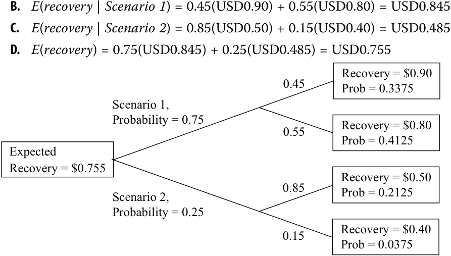
- A (B trong hình): $E(\text{mức thu hồi} | \text{Kịch bản 1}) = 0.45(\text{USD } 0.90) + 0.55(\text{USD } 0.80) = \text{USD } 0.845$
- B (C trong hình): $E(\text{mức thu hồi} | \text{Kịch bản 2}) = 0.85(\text{USD } 0.50) + 0.15(\text{USD } 0.40) = \text{USD } 0.485$
- C (D trong hình): $E(\text{mức thu hồi}) = 0.75(\text{USD } 0.845) + 0.25(\text{USD } 0.485) = \text{USD } 0.755$
- D (Sơ đồ cây xác suất trong hình):
- Gốc cây: Mức thu hồi kỳ vọng (Expected Recovery) = $\$0.755$
- Nhánh trên: Kịch bản 1 (Scenario 1), Xác suất = 0.75:
- Nhánh con 1 (0.45): Thu hồi = $\$0.90$, Xác suất = 0.3375
- Nhánh con 2 (0.55): Thu hồi = $\$0.80$, Xác suất = 0.4125
- Nhánh dưới: Kịch bản 2 (Scenario 2), Xác suất = 0.25:
- Nhánh con 1 (0.85): Thu hồi = $\$0.50$, Xác suất = 0.2125
- Nhánh con 2 (0.15): Thu hồi = $\$0.40$, Xác suất = 0.0375
BAYES' FORMULA AND UPDATING PROBABILITY ESTIMATES
CÔNG THỨC BAYES VÀ CẬP NHẬT ƯỚC LƯỢNG XÁC SUẤT (BAYES' FORMULA AND UPDATING PROBABILITY ESTIMATES)
calculate and interpret an updated probability in an investment setting using Bayes’ formula
tính toán và diễn giải xác suất cập nhật trong bối cảnh đầu tư bằng cách sử dụng công thức Bayes
A topic that is often useful in solving investment problems is Bayes’ formula: what probability theory has to say about learning from experience.
Một chủ đề thường hữu ích trong việc giải quyết các bài toán đầu tư là công thức Bayes: những gì lý thuyết xác suất nói về việc học hỏi từ kinh nghiệm.
Bayes’ Formula
Công thức Bayes (Bayes’ Formula)
When we make decisions involving investments, we often start with viewpoints based on our experience and knowledge. These viewpoints may be changed or confirmed by new knowledge and observations. Bayes’ formula is a rational method for adjusting our viewpoints as we confront new information. Bayes’ formula and related concepts are used in many business and investment decision-making contexts.
Khi đưa ra các quyết định liên quan đến đầu tư, chúng ta thường bắt đầu với những quan điểm dựa trên kinh nghiệm và kiến thức của mình. Những quan điểm này có thể được thay đổi hoặc củng cố bởi kiến thức và các quan sát mới. Công thức Bayes (Bayes’ formula) là một phương pháp hợp lý để điều chỉnh quan điểm của chúng ta khi tiếp nhận thông tin mới. Công thức Bayes và các khái niệm liên quan được sử dụng trong nhiều bối cảnh ra quyết định kinh doanh và đầu tư.
Bayes’ formula makes use of the total probability rule:
Công thức Bayes sử dụng quy tắc xác suất toàn phần (total probability rule):
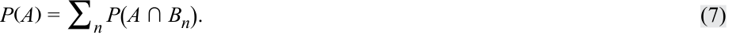
To review, that rule expresses the probability of an event as a weighted average of the probabilities of the event, given a set of scenarios. Bayes’ formula works in reverse; more precisely, it reverses the “given that” information. Bayes’ formula uses the occurrence of the event to infer the probability of the scenario generating it. For that reason, Bayes’ formula is sometimes called an inverse probability. In many applications, including those illustrating its use in this section, an individual is updating his/her beliefs concerning the causes that may have produced a new observation.
Để ôn lại, quy tắc đó biểu thị xác suất của một biến cố dưới dạng trung bình có trọng số của các xác suất của biến cố đó khi biết một tập hợp các kịch bản. Công thức Bayes hoạt động theo chiều ngược lại; chính xác hơn, nó đảo ngược thông tin “với điều kiện / khi biết rằng” (“given that”). Công thức Bayes sử dụng sự xuất hiện của biến cố để suy ra xác suất của kịch bản đã tạo ra nó. Vì lý do đó, công thức Bayes đôi khi được gọi là xác suất nghịch đảo (inverse probability). Trong nhiều ứng dụng, bao gồm cả những ứng dụng minh họa cách sử dụng nó trong phần này, một cá nhân đang cập nhật niềm tin của mình liên quan đến các nguyên nhân có thể đã tạo ra một quan sát mới.
Bayes’ Formula. Given a set of prior probabilities for an event of interest, if you receive new information, the rule for updating your probability of the event is as follows:
Công thức Bayes (Bayes’ Formula). Cho một tập hợp các xác suất tiên nghiệm (prior probabilities) đối với một biến cố đang quan tâm, nếu bạn nhận được thông tin mới, quy tắc để cập nhật xác suất của bạn về biến cố đó như sau:
Updated probability of event given the new information
= _____Unconditional probability of the new informationProbability of the new information given event× Prior probability of event .
In probability notation, this formula can be written concisely as follows:
Theo ký hiệu xác suất, công thức này có thể được viết ngắn gọn như sau:
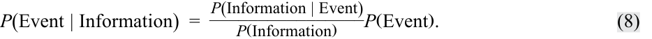
Consider the following example using frequencies—which may be more straightforward initially than probabilities—for illustrating and understanding Bayes’ formula. Assume a hypothetical large-cap stock index has 500 member firms, of which 100 are technology firms, and 60 of these had returns of >10 percent, and 40 had returns of ≤10 percent. Of the 400 non-technology firms in the index, 100 had returns of >10 percent, and 300 had returns of ≤10 percent. The tree map in Exhibit 4 is useful for visualizing this example, which is summarized in the table in Exhibit 5.
Hãy xem xét ví dụ sau đây sử dụng các tần số (frequencies)—ban đầu có thể dễ hiểu hơn so với các xác suất—để minh họa và hiểu rõ công thức Bayes. Giả sử một chỉ số cổ phiếu vốn hóa lớn giả định có 500 công ty thành viên, trong đó có 100 công ty công nghệ (tech firms), và 60 trong số này có tỷ suất sinh lợi $> 10\%$, còn 40 công ty có tỷ suất sinh lợi $\le 10\%$. Trong số 400 công ty phi công nghệ (non-technology firms) trong chỉ số, 100 công ty có tỷ suất sinh lợi $> 10\%$, và 300 công ty có tỷ suất sinh lợi $\le 10\%$. Sơ đồ cây phân cấp (tree map) trong Bảng minh họa 4 rất hữu ích để trực quan hóa ví dụ này, và được tóm tắt trong bảng ở Bảng minh họa 5.
Exhibit 4: Tree Map for Visualizing Bayes’ Formula Using Frequencies
Bảng minh họa 4: Sơ đồ Cây để Trực quan hóa Công thức Bayes Sử dụng Tần số (Tree Map for Visualizing Bayes’ Formula Using Frequencies)
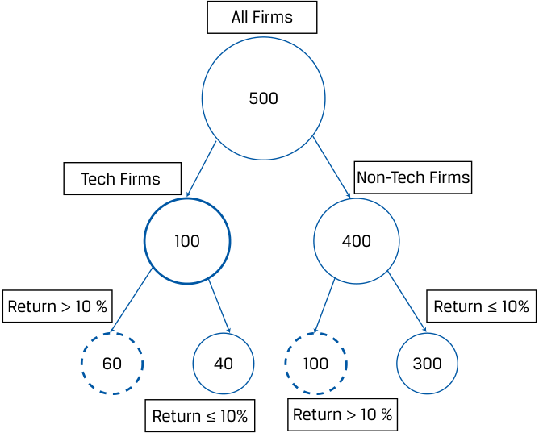
Chú thích hình ảnh: - All Firms (Tất cả công ty): 500 - Tech Firms (Công ty công nghệ): 100 $\rightarrow$ Return > 10%: 60 | Return $\le$ 10%: 40 - Non-Tech Firms (Công ty phi công nghệ): 400 $\rightarrow$ Return > 10%: 100 | Return $\le$ 10%: 300
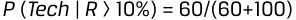
Exhibit 5: Summary of Returns for Tech and Non-Tech Firms in Hypothetical Large-Cap Equity Index
Bảng minh họa 5: Tóm tắt Tỷ suất sinh lợi của các Công ty Công nghệ và Phi công nghệ trong Chỉ số Cổ phiếu Vốn hóa Lớn Giả định (Summary of Returns for Tech and Non-Tech Firms in Hypothetical Large-Cap Equity Index)
| Type of Firm in | Stock Index | ||
|---|---|---|---|
| Rate of Return (R) | Non-Tech | Tech | Total |
| R >10% | 100 | 60 | 160 |
| R ≤10% | 300 | 40 | 340 |
| Total | 400 | 100 | 500 |
| Loại công ty trong Chỉ số Cổ phiếu (Type of Firm in Stock Index) | |||
|---|---|---|---|
| Tỷ suất sinh lợi ($R$) | Phi công nghệ (Non-Tech) | Công nghệ (Tech) | Tổng (Total) |
| $R > 10\%$ | 100 | 60 | 160 |
| $R \le 10\%$ | 300 | 40 | 340 |
| Tổng (Total) | 400 | 100 | 500 |
What is the probability a firm is a tech firm given that it has a return of >10 percent or P ( tech | R > 10% )? Looking at the frequencies in the tree map and in the table, we can see many empirical probabilities, such as the following:
Xác suất một công ty là công ty công nghệ khi biết rằng nó có tỷ suất sinh lợi $> 10\%$, hay $P(\text{tech} | R > 10\%)$, là bao nhiêu? Nhìn vào các tần số trong sơ đồ cây và trong bảng, chúng ta có thể thấy nhiều xác suất thực nghiệm, chẳng hạn như sau:
-
P(tech) = 100 / 500 = 0.20,
-
P ( non-tech ) = 400 / 500 = 0.80,
-
P(R > 10% | tech) = 60 / 100 = 0.60,
-
P ( R > 10% | non-tech ) = 100 / 400 = 0.25,
-
P(R > 10%) = 160 / 500 = 0.32, and, finally,
-
P ( tech | R > 10% ) = 60/ 160 = 0.375.
-
$P(\text{tech}) = 100 / 500 = 0.20$,
-
$P(\text{non-tech}) = 400 / 500 = 0.80$,
-
$P(R > 10\% | \text{tech}) = 60 / 100 = 0.60$,
-
$P(R > 10\% | \text{non-tech}) = 100 / 400 = 0.25$,
-
$P(R > 10\%) = 160 / 500 = 0.32$, và cuối cùng,
-
$P(\text{tech} | R > 10\%) = 60 / 160 = 0.375$.
This probability is the answer to our initial question.
Xác suất này chính là câu trả lời cho câu hỏi ban đầu của chúng ta.
Without looking at frequencies, let us use Bayes’ formula to find the probability that a firm has a return of >10 percent and then the probability that a firm with a return of >10 percent is a tech firm, P ( tech | R > 10% ). First,
Không nhìn vào các tần số, chúng ta hãy sử dụng công thức Bayes để tìm xác suất một công ty có tỷ suất sinh lợi $> 10\%$ và sau đó là xác suất một công ty có tỷ suất sinh lợi $> 10\%$ là một công ty công nghệ, $P(\text{tech} | R > 10\%)$. Trước hết,
P ( R > 10% )
-
= P ( R > 10% | tech ) × P ( tech ) + P ( R > 10% | non-tech ) × P ( non-tech )
-
= 0.60 × 0.20 + 0.25 × 0.80 = 0.32.
Now we can implement the Bayes’ formula answer to our question:
Bây giờ chúng ta có thể áp dụng công thức Bayes để trả lời câu hỏi của mình:
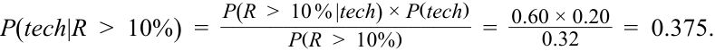
The probability that a firm with a return of >10 percent is a tech firm is 0.375, which is impressive because the probability that a firm is a tech firm (from the whole sample) is only 0.20. In sum, it can be readily seen from the tree map and the underlying frequency data (Exhibit 4 and 5, respectively) or from the probabilities in Bayes’ formula that 160 firms have R >10 percent, and 60 of them are tech firms, so
Xác suất để một công ty có tỷ suất sinh lợi $> 10\%$ là công ty công nghệ bằng 0.375, một con số rất đáng chú ý vì xác suất để một công ty bất kỳ là công ty công nghệ (tính trên toàn bộ mẫu) chỉ là 0.20. Tóm lại, có thể dễ dàng nhận thấy từ sơ đồ cây và dữ liệu tần số cơ sở (lần lượt ở Bảng minh họa 4 và 5) hoặc từ các xác suất trong công thức Bayes rằng có 160 công ty đạt $R > 10\%$, và 60 trong số đó là các công ty công nghệ, do đó:
P ( tech | R > 10% ) = 60/160 = 0.375.
Users of Bayesian statistics do not consider probabilities (or likelihoods) to be known with certainty but believe that these should be subject to modification whenever new information becomes available. Our beliefs or probabilities are continually updated as new information arrives over time.
Những người sử dụng thống kê Bayes không coi các xác suất (hay các khả năng xảy ra – likelihoods) là được biết trước một cách chắc chắn mà tin rằng chúng cần được điều chỉnh bất cứ khi nào có thông tin mới. Niềm tin hay xác suất của chúng ta được cập nhật liên tục khi thông tin mới xuất hiện theo thời gian.
To further illustrate Bayes’ formula, we work through an investment example that can be adapted to any actual problem. Suppose you are an investor in the stock of DriveMed, Inc. Positive earnings surprises relative to consensus EPS estimates often result in positive stock returns, and negative surprises often have the opposite effect. DriveMed is preparing to release last quarter’s EPS result, and you are interested in which of these three events happened: last quarter’s EPS exceeded the consensus EPS estimate, last quarter’s EPS exactly met the consensus EPS estimate, or last quarter’s EPS fell short of the consensus EPS estimate. This list of the alternatives is mutually exclusive and exhaustive.
Để minh họa rõ hơn công thức Bayes, chúng ta hãy giải quyết một ví dụ đầu tư có thể điều chỉnh cho phù hợp với bất kỳ bài toán thực tế nào. Giả sử bạn là một nhà đầu tư nắm giữ cổ phiếu của DriveMed, Inc. Những bất ngờ thu nhập tích cực (positive earnings surprises) so với ước tính EPS đồng thuận (consensus EPS estimates) thường dẫn đến tỷ suất sinh lợi cổ phiếu dương, và những bất ngờ tiêu cực thường có tác động ngược lại. DriveMed đang chuẩn bị công bố kết quả EPS của quý trước, và bạn quan tâm đến việc biến cố nào trong ba biến cố sau đây đã xảy ra: EPS quý trước vượt ước tính EPS đồng thuận (EPS exceeded consensus), EPS quý trước đạt đúng bằng ước tính EPS đồng thuận (EPS met consensus), hoặc EPS quý trước thấp hơn ước tính EPS đồng thuận (EPS fell short of consensus). Danh sách các khả năng thay thế này là xung khắc và đầy đủ.
On the basis of your own research, you write down the following prior probabilities (or priors, for short) concerning these three events:
Trên cơ sở nghiên cứu của riêng mình, bạn ghi lại các xác suất tiên nghiệm (prior probabilities / priors) sau đây liên quan đến ba biến cố này:
-
P ( EPS exceeded consensus ) = 0.45
-
P ( EPS met consensus ) = 0.30
-
P ( EPS fell short of consensus ) = 0.25
-
$P(\text{EPS vượt đồng thuận}) = 0.45$
-
$P(\text{EPS đạt đồng thuận}) = 0.30$
-
$P(\text{EPS thấp hơn đồng thuận}) = 0.25$
These probabilities are “prior” in the sense that they reflect only what you know now, before the arrival of any new information.
Các xác suất này mang tính “tiên nghiệm” (“prior”) theo nghĩa là chúng chỉ phản ánh những gì bạn biết ở thời điểm hiện tại, trước khi có bất kỳ thông tin mới nào xuất hiện.
The next day, DriveMed announces that it is expanding factory capacity in Singapore and Ireland to meet increased sales demand. You assess this new information. The decision to expand capacity relates not only to current demand but probably also to the prior quarter’s sales demand. You know that sales demand is positively related to EPS. So now it appears more likely that last quarter’s EPS will exceed the consensus.
Ngày hôm sau, DriveMed thông báo rằng họ đang mở rộng công suất nhà máy tại Singapore và Ireland để đáp ứng nhu cầu bán hàng gia tăng. Bạn đánh giá thông tin mới này. Quyết định mở rộng công suất không chỉ liên quan đến nhu cầu hiện tại mà có lẽ còn liên quan đến nhu cầu bán hàng của quý trước. Bạn biết rằng nhu cầu bán hàng có liên hệ cùng chiều với EPS. Vì vậy, bây giờ có vẻ nhiều khả năng hơn là EPS của quý trước sẽ vượt mức đồng thuận.
The question you have is, “In light of the new information, what is the updated probability that the prior quarter’s EPS exceeded the consensus estimate?”
Câu hỏi bạn đặt ra là: “Trước thông tin mới này, xác suất cập nhật cho việc EPS quý trước vượt ước tính đồng thuận là bao nhiêu?”
Bayes’ formula provides a rational method for accomplishing this updating. We can abbreviate the new information as DriveMed expands . The first step in applying Bayes’ formula is to calculate the probability of the new information (here: DriveMed expands ), given a list of events or scenarios that may have generated it. The list of events should cover all possibilities, as it does here. Formulating these conditional probabilities is the key step in the updating process. Suppose your view, based on research of DriveMed and its industry, is
Công thức Bayes cung cấp một phương pháp hợp lý để thực hiện việc cập nhật này. Chúng ta có thể viết tắt thông tin mới là DriveMed mở rộng (DriveMed expands). Bước đầu tiên trong việc áp dụng công thức Bayes là tính xác suất của thông tin mới (ở đây là: DriveMed mở rộng), khi biết một danh sách các biến cố hoặc kịch bản có thể đã tạo ra nó. Danh sách các biến cố phải bao quát mọi khả năng có thể xảy ra, như trong trường hợp này. Việc thiết lập các xác suất có điều kiện này là bước then chốt trong quy trình cập nhật. Giả sử quan điểm của bạn, dựa trên nghiên cứu về DriveMed và ngành của công ty, là:
-
P ( DriveMed expands | EPS exceeded consensus ) = 0.75
-
P ( DriveMed expands | EPS met consensus ) = 0.20
-
P ( DriveMed expands | EPS fell short of consensus ) = 0.05
-
$P(\text{DriveMed mở rộng} | \text{EPS vượt đồng thuận}) = 0.75$
-
$P(\text{DriveMed mở rộng} | \text{EPS đạt đồng thuận}) = 0.20$
-
$P(\text{DriveMed mở rộng} | \text{EPS thấp hơn đồng thuận}) = 0.05$
Conditional probabilities of an observation (here: DriveMed expands ) are sometimes referred to as likelihoods . Again, likelihoods are required for updating the probability.
Các xác suất có điều kiện của một quan sát (ở đây là: DriveMed mở rộng) đôi khi được gọi là các khả năng xảy ra (likelihoods). Một lần nữa, các khả năng xảy ra này là cần thiết để cập nhật xác suất.
Next, you combine these conditional probabilities or likelihoods with your prior probabilities to get the unconditional probability for DriveMed expanding, P ( DriveMed expands ), as follows:
Tiếp theo, bạn kết hợp các xác suất có điều kiện hay các khả năng xảy ra này với các xác suất tiên nghiệm của mình để có được xác suất vô điều kiện của việc DriveMed mở rộng, $P(\text{DriveMed mở rộng})$, như sau:
P ( DriveMed expands )
= P ( DriveMed expands | EPS exceeded consensus) × P (EPS exceeded consensus)
-
P ( DriveMed expands | EPS met consensus) × P ( EPS met consensus )
-
P ( DriveMed expands | EPS fell short of consensus ) × P ( EPS fell short of consensus )
= 0.75(0.45) + 0.20(0.30) + 0.05(0.25) = 0.41, or 41%.
This is the total probability rule in action. Now you can answer your question by applying Bayes’ formula, Equation 8:
P(EPS" " exceeded" " consensus│DriveMed" " expands)
Đây chính là quy tắc xác suất toàn phần đang phát huy tác dụng. Bây giờ bạn có thể trả lời câu hỏi của mình bằng cách áp dụng công thức Bayes, Phương trình 8:
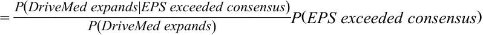
=(0.75/0.41)(0.45)=1.829268(0.45)
=0.823171
Trước thông báo của DriveMed, bạn nghĩ rằng xác suất DriveMed đánh bại kỳ vọng đồng thuận là 45 phần trăm. Trên cơ sở diễn giải của bạn về thông báo này, bạn cập nhật xác suất đó lên 82.3 phần trăm. Xác suất cập nhật này được gọi là xác suất hậu nghiệm (posterior probability) của bạn vì nó phản ánh hoặc xuất hiện sau khi có thông tin mới.
Before DriveMed’s announcement, you thought the probability that DriveMed would beat consensus expectations was 45 percent. On the basis of your interpretation of the announcement, you update that probability to 82.3 percent. This updated probability is called your posterior probability because it reflects or comes after the new information.
The Bayes’ calculation takes the prior probability, which was 45 percent, and multiplies it by a ratio—the first term on the right-hand side of the equal sign. The denominator of the ratio is the probability that DriveMed expands, as you view it without considering (conditioning on) anything else. Therefore, this probability is unconditional. The numerator is the probability that DriveMed expands, if last quarter’s EPS actually exceeded the consensus estimate. This last probability is larger than unconditional probability in the denominator, so the ratio (1.83 roughly) is greater than 1. As a result, your updated or posterior probability is larger than your prior probability. Thus, the ratio reflects the impact of the new information on your prior beliefs.
Phép tính Bayes lấy xác suất tiên nghiệm, vốn là 45 phần trăm, và nhân nó với một tỷ số—số hạng đầu tiên ở vế phải của dấu bằng. Mẫu số của tỷ số này là xác suất DriveMed mở rộng, theo cách bạn nhìn nhận mà không xét đến (đặt điều kiện trên) bất kỳ điều gì khác. Do đó, xác suất này là vô điều kiện. Tử số là xác suất DriveMed mở rộng, nếu EPS quý trước thực sự vượt ước tính đồng thuận. Xác suất vừa nêu này lớn hơn xác suất vô điều kiện ở mẫu số, vì vậy tỷ số này (xấp xỉ 1.83) lớn hơn 1. Kết quả là, xác suất cập nhật hay xác suất hậu nghiệm của bạn lớn hơn xác suất tiên nghiệm. Như vậy, tỷ số này phản ánh tác động của thông tin mới lên niềm tin tiên nghiệm của bạn.
EXAMPLE 4
VÍ DỤ 4
Inferring Whether DriveMed’s EPS Met Consensus EPS
Suy luận Liệu EPS của DriveMed Có Đạt Mức EPS Đồng thuận Hay Không (Inferring Whether DriveMed’s EPS Met Consensus EPS)
You are still an investor in DriveMed stock. To review the givens, your prior probabilities are P ( EPS exceeded consensus ) = 0.45, P ( EPS met consensus ) = 0.30, and P ( EPS fell short of consensus ) = 0.25. You also have the following conditional probabilities:
Bạn vẫn là một nhà đầu tư nắm giữ cổ phiếu DriveMed. Để ôn lại các dữ kiện đã cho, các xác suất tiên nghiệm của bạn là $P(\text{EPS vượt đồng thuận}) = 0.45$, $P(\text{EPS đạt đồng thuận}) = 0.30$, và $P(\text{EPS thấp hơn đồng thuận}) = 0.25$. Bạn cũng có các xác suất có điều kiện sau đây:
P(DriveMed expands | EPS exceeded consensus) = 0.75
P(DriveMed expands | EPS met consensus) = 0.20
P(DriveMed expands | EPS fell short of consensus) = 0.05
- What is your estimate of the probability P ( EPS exceeded consensus | DriveMed expands )?
- Ước tính của bạn về xác suất $P(\text{EPS đạt đồng thuận} | \text{DriveMed mở rộng})$ là bao nhiêu?
Recall that you updated your probability that last quarter’s EPS exceeded the consensus estimate from 45 percent to 82.3 percent after DriveMed announced it would expand. Now you want to update your other priors.
Hãy nhớ lại rằng bạn đã cập nhật xác suất EPS quý trước vượt ước tính đồng thuận từ 45 phần trăm lên 82.3 phần trăm sau khi DriveMed thông báo sẽ mở rộng. Bây giờ bạn muốn cập nhật các xác suất tiên nghiệm còn lại của mình.
Update your prior probability that DriveMed’s EPS met consensus.
Hãy cập nhật xác suất tiên nghiệm của bạn rằng EPS của DriveMed đạt đúng mức đồng thuận.
Solution:
Lời giải:
The probability is P ( EPS met consensus | DriveMed expands ) =
Xác suất đó là $P(\text{EPS đạt đồng thuận} | \text{DriveMed mở rộng}) =$
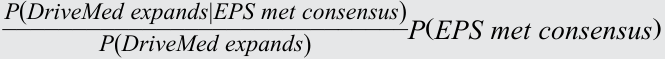
The probability P ( DriveMed expands ) is found by taking each of the three conditional probabilities in the statement of the problem, such as P ( DriveMed expands | EPS exceeded consensus ); multiplying each one by the prior probability of the conditioning event, such as P ( EPS exceeded consensus ); and then adding the three products. The calculation is unchanged from the problem in the text above: P ( DriveMed expands ) = 0.75(0.45) + 0.20(0.30) + 0.05(0.25) = 0.41, or 41 percent. The other probabilities needed, P ( DriveMed expands | EPS met consensus ) = 0.20 and P ( EPS met consensus ) = 0.30, are givens. So
P ( EPS met consensus | DriveMed expands )
Xác suất $P(\text{DriveMed mở rộng})$ được tìm bằng cách lấy từng xác suất trong ba xác suất có điều kiện nêu trong đề bài, chẳng hạn như $P(\text{DriveMed mở rộng} | \text{EPS vượt đồng thuận})$; nhân mỗi xác suất đó với xác suất tiên nghiệm của biến cố điều kiện, chẳng hạn như $P(\text{EPS vượt đồng thuận})$; và sau đó cộng ba tích số lại với nhau. Phép tính này không thay đổi so với bài toán trong phần nội dung phía trên: $P(\text{DriveMed mở rộng}) = 0.75(0.45) + 0.20(0.30) + 0.05(0.25) = 0.41$, hay 41 phần trăm. Các xác suất cần thiết khác, $P(\text{DriveMed mở rộng} | \text{EPS đạt đồng thuận}) = 0.20$ và $P(\text{EPS đạt đồng thuận}) = 0.30$, đã được cho trước. Do đó:
= [ P ( DriveMed expands | EPS met consensus )/ P ( DriveMed expands )] P ( EPS met consensus )
= (0.20/0.41)(0.30) = 0.487805(0.30) = 0.146341
After taking account of the announcement on expansion, your updated probability that last quarter’s EPS for DriveMed just met consensus is 14.6 percent compared with your prior probability of 30 percent.
- Update your prior probability that DriveMed’s EPS fell short of consensus. Solution:
P ( DriveMed expands ) was already calculated as 41 percent. Recall that P ( DriveMed expands | EPS fell short of consensus ) = 0.05 and P ( EPS fell short of consensus ) = 0.25 are givens.
P ( EPS fell short of consensus|DriveMed expands )
Sau khi tính đến thông báo về việc mở rộng, xác suất cập nhật của bạn rằng EPS quý trước của DriveMed chỉ vừa đạt mức đồng thuận là 14.6 phần trăm so với xác suất tiên nghiệm là 30 phần trăm.
= [ P(DriveMed expands | EPS fell short of consensus )/
P ( DriveMed expands )] P ( EPS fell short of consensus )
- Hãy cập nhật xác suất tiên nghiệm của bạn rằng EPS của DriveMed thấp hơn mức đồng thuận.
= (0.05/0.41)(0.25) = 0.121951(0.25) = 0.030488
Lời giải:
As a result of the announcement, you have revised your probability that DriveMed’s EPS fell short of consensus from 25 percent (your prior probability) to 3 percent.
$P(\text{DriveMed mở rộng})$ đã được tính ở trên là 41 phần trăm. Hãy nhớ rằng $P(\text{DriveMed mở rộng} | \text{EPS thấp hơn đồng thuận}) = 0.05$ và $P(\text{EPS thấp hơn đồng thuận}) = 0.25$ là các dữ kiện đã cho.
Kết quả của thông báo này là bạn đã điều chỉnh xác suất EPS của DriveMed thấp hơn mức đồng thuận từ 25 phần trăm (xác suất tiên nghiệm của bạn) xuống còn 3 phần trăm.
- Show that the three updated probabilities sum to 1. (Carry each probability to four decimal places.)
- Hãy chứng minh rằng tổng của ba xác suất cập nhật bằng 1. (Lấy mỗi xác suất đến bốn chữ số thập phân.)
Solution:
The sum of the three updated probabilities is
Lời giải:
P ( EPS exceeded consensus|DriveMed expands ) + P ( EPS met consensus | DriveMed expands ) + P ( EPS fell short of consensus | DriveMed expands )
Tổng của ba xác suất cập nhật là:
= 0.8232 + 0.1463 + 0.0305 = 1.000
The three events ( EPS exceeded consensus , EPS met consensus , and EPS fell short of consensus ) are mutually exclusive and exhaustive: One of these events or statements must be true, so the conditional probabilities must sum to 1. Whether we are talking about conditional or unconditional probabilities, whenever we have a complete set of distinct possible events or outcomes, the probabilities must sum to 1. This calculation serves to check your work.
Ba biến cố (EPS vượt đồng thuận, EPS đạt đồng thuận, và EPS thấp hơn đồng thuận) là xung khắc và đầy đủ: Một trong các biến cố hoặc nhận định này bắt buộc phải đúng, vì vậy tổng các xác suất có điều kiện phải bằng 1. Cho dù chúng ta đang nói về xác suất có điều kiện hay vô điều kiện, bất cứ khi nào chúng ta có một tập hợp đầy đủ các biến cố hoặc kết quả riêng biệt có thể xảy ra, tổng các xác suất phải bằng 1. Phép tính này dùng để kiểm tra lại kết quả làm việc của bạn.
- Suppose, because of lack of prior beliefs about whether DriveMed would meet consensus, you updated on the basis of prior probabilities that all three possibilities were equally likely: P ( EPS exceeded consensus ) = P ( EPS met consensus ) = P ( EPS fell short of consensus ) = 1/3.
- Giả sử, do thiếu niềm tin tiên nghiệm về việc liệu DriveMed có đạt mức đồng thuận hay không, bạn thực hiện cập nhật trên cơ sở các xác suất tiên nghiệm rằng cả ba khả năng đều có cơ hội xảy ra ngang nhau: $P(\text{EPS vượt đồng thuận}) = P(\text{EPS đạt đồng thuận}) = P(\text{EPS thấp hơn đồng thuận}) = 1/3$.
Solution:
Using the probabilities given in the question,
Lời giải:
P ( DriveMed expands )
Sử dụng các xác suất được cho trong câu hỏi,
= P ( DriveMed expands | EPS exceeded consensus ) P ( EPS exceeded consensus ) + P ( DriveMed expands | EPS met consensus ) P ( EPS met consensus ) + P ( DriveMed expands | EPS fell short of consensus ) P ( EPS fell short of consensus )
= 0.75(1/3) + 0.20(1/3) + 0.05(1/3) = 1/3
Không có gì đáng ngạc nhiên, xác suất DriveMed mở rộng là một phần ba ($1/3$) bởi vì người ra quyết định không có niềm tin hay quan điểm tiên nghiệm nào về việc EPS thực hiện tốt ra sao so với ước tính đồng thuận. Bây giờ chúng ta có thể sử dụng công thức Bayes để tìm $P(\text{EPS vượt đồng thuận} | \text{DriveMed mở rộng}) = [P(\text{DriveMed mở rộng} | \text{EPS vượt đồng thuận}) / P(\text{DriveMed mở rộng})] P(\text{EPS vượt đồng thuận}) = [0.75 / (1/3)](1/3) = 0.75$, hay 75 phần trăm. Xác suất này hoàn toàn trùng khớp với ước tính của bạn về $P(\text{DriveMed mở rộng} | \text{EPS vượt đồng thuận})$. Khi các xác suất tiên nghiệm bằng nhau, xác suất của thông tin khi biết một biến cố đúng bằng xác suất của biến cố đó khi biết thông tin. Khi người ra quyết định có các xác suất tiên nghiệm bằng nhau (được gọi là xác suất tiên nghiệm phân tán đều – diffuse priors), xác suất của một biến cố được quyết định hoàn toàn bởi thông tin mới.
Not surprisingly, the probability of DriveMed expanding is one-third (1/3) because the decision maker has no prior beliefs or views regarding how well EPS performed relative to the consensus estimate. Now we can use Bayes’ formula to find P ( EPS exceeded consensus | DriveMed expands ) = [ P ( DriveMed expands | EPS exceeded consensus )/ P ( DriveMed expands )] P ( EPS exceeded consensus ) = [(0.75/(1/3)] (1/3) = 0.75, or 75 percent. This probability is identical to your estimate of P ( DriveMed expands | EPS exceeded consensus ). When the prior probabilities are equal, the probability of information given an event equals the probability of the event given the information. When a decision maker has equal prior probabilities (called diffuse priors ), the probability of an event is determined by the information.
BỘ CÂU HỎI (QUESTION SET)
QUESTION SET
The following example shows how Bayes’ formula is used in credit granting in cases in which the probability of payment given credit information is higher than the probability of payment without the information.
Ví dụ sau đây cho thấy cách công thức Bayes được sử dụng trong việc cấp tín dụng trong những trường hợp mà xác suất thanh toán khi biết thông tin tín dụng cao hơn xác suất thanh toán khi không có thông tin đó.
- Jake Bronson is predicting the probability that consumer finance applicants granted credit will repay in a timely manner (i.e., their accounts will not
- Jake Bronson đang dự đoán xác suất những người nộp đơn vay tài chính tiêu dùng được cấp tín dụng sẽ trả nợ đúng hạn (tức là tài khoản của họ sẽ không
become “past due”). Using Bayes’ formula, he has structured the problem as follows:
trở thành “quá hạn”). Sử dụng công thức Bayes, anh ấy đã cấu trúc bài toán như sau:
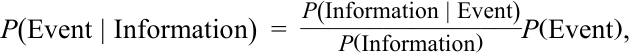
where the event ( A ) is “timely repayment” and the information ( B ) is having a “good credit report.”
trong đó biến cố ($A$) là “trả nợ đúng hạn” (“timely repayment”) và thông tin ($B$) là có “báo cáo tín dụng tốt” (“good credit report”).
Bronson estimates that the unconditional probability of receiving timely payment, P(A) , is 0.90 and that the unconditional probability of having a good credit report, P(B) , is 0.80. The probability of having a good credit report given that borrowers paid on time, P(B | A) , is 0.85.
Bronson ước tính rằng xác suất vô điều kiện của việc nhận được khoản thanh toán đúng hạn, $P(A)$, là 0.90 và xác suất vô điều kiện của việc có báo cáo tín dụng tốt, $P(B)$, là 0.80. Xác suất có báo cáo tín dụng tốt khi biết rằng người đi vay đã trả nợ đúng hạn, $P(B | A)$, là 0.85.
What is the probability that applicants with good credit reports will repay in a timely manner?
Xác suất những người nộp đơn có báo cáo tín dụng tốt sẽ trả nợ đúng hạn là bao nhiêu?
-
A. 0.720
-
B. 0.944
-
C. 0.956
-
A. 0.720
-
B. 0.944
-
C. 0.956
Solution:
Lời giải:
The correct answer is C. The probability of timely repayment given a good credit report, P(A | B) , is
Đáp án đúng là C. Xác suất trả nợ đúng hạn khi biết có báo cáo tín dụng tốt, $P(A | B)$, là:
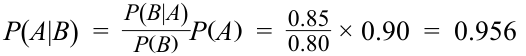
- You have developed a set of criteria for evaluating distressed credits. Companies that do not receive a passing score are classed as likely to go bankrupt within 12 months. You gathered the following information when validating the criteria:
-
Forty percent of the companies to which the test is administered will go bankrupt within 12 months: P ( non-survivor ) = 0.40.
-
Fifty-five percent of the companies to which the test is administered pass it: P ( pass test ) = 0.55.
-
The probability that a company will pass the test given that it will subsequently survive 12 months, is 0.85: P ( pass test | survivor ) = 0.85.
- Bạn đã xây dựng một bộ tiêu chí để đánh giá các khoản tín dụng gặp khó khăn (distressed credits). Các công ty không đạt được điểm đậu (passing score) được phân loại là có khả năng phá sản trong vòng 12 tháng. Bạn đã thu thập được thông tin sau đây khi kiểm định bộ tiêu chí:
-
Bốn mươi phần trăm các công ty được áp dụng bài kiểm tra sẽ phá sản trong vòng 12 tháng: $P(\text{không sống sót / non-survivor}) = 0.40$.
-
Năm mươi lăm phần trăm các công ty được áp dụng bài kiểm tra vượt qua được nó: $P(\text{vượt qua bài kiểm tra / pass test}) = 0.55$.
-
Xác suất một công ty vượt qua bài kiểm tra khi biết rằng sau đó công ty sống sót qua 12 tháng là 0.85: $P(\text{vượt qua bài kiểm tra} | \text{sống sót / survivor}) = 0.85$.
Sử dụng thông tin kiểm định bộ tiêu chí của bạn, hãy tính các giá trị sau:
Using the information validating your criteria, calculate the following:
-
A. $P(\text{vượt qua bài kiểm tra} | \text{không sống sót})$ là bao nhiêu?
-
B. Sử dụng công thức Bayes, hãy tính xác suất một công ty là công ty sống sót khi biết rằng nó vượt qua bài kiểm tra; nghĩa là, tính $P(\text{sống sót} | \text{vượt qua bài kiểm tra})$.
-
C. Xác suất một công ty là công ty không sống sót khi biết rằng nó trượt bài kiểm tra (fail test) là bao nhiêu?
-
D. Bài kiểm tra này có hiệu quả không?
-
A. What is P( pass test | non-survivor )?
-
B. Using Bayes’ formula, calculate the probability that a company is a survivor, given that it passes the test; that is, calculate P ( survivor | pass test ).
-
C. What is the probability that a company is a non-survivor , given that it fails the test?
-
D. Is the test effective?
-
Solution:
-
A. We can set up the equation using the total probability rule:
-
P ( pass test ) = P ( pass test | survivor ) P ( survivor )
Lời giải:
- A. Chúng ta có thể thiết lập phương trình bằng cách sử dụng quy tắc xác suất toàn phần:
- P ( pass test | non-survivor ) P ( non-survivor ) We know that P ( survivor ) = 1 – P ( non-survivor ) = 1 – 0.40 = 0.60. Therefore, P ( pass test ) = 0.55 = 0.85(0.60) + P ( pass test | non-survivor )(0.40). Thus, P ( pass test | non-survivor ) = [0.55 – 0.85(0.60)]/0.40 = 0.10. B. We can calculate the probability that a company is a survivor as follows:P(survivor|passtest) = [P(passtest|survivor) /P(passtest)]P(survivor) =( 0.85 / 0.55) 0.60 = 0.927273 The information that a company passes the test causes you to update your probability that it is a survivor from 0.60 to approximately 0.927. C. According to Bayes’ formula, P ( non-survivor | fail test ) = [ P (- fail test | non-survivor )/ P ( fail test )] P ( non-survivor ) = [ P ( fail test | non-survivor )/0.45]0.40. We can set up the following equation to obtain P ( fail test | non-survivor ): P ( fail test ) = P ( fail test | non − survivor ) P( non − survivor) + P ( fail test | survivor ) P( survivor) 0.45 = P ( fail test | non − survivor ) 0.40 + 0.15( 0.60) where P ( fail test | survivor ) = 1 − P ( pass test | survivor ) = 1 − 0.85 = 0.15. So, P ( fail test | non-survivor ) = [0.45 − 0.15(0.60)]/0.40 = 0.90. Using this result with the previous formula, we find P ( non-survivor | fail test ) = [0.90/0.45]0.40 = 0.80. Seeing that a company fails the test causes us to update the probability that it is a non-survivor from 0.40 to 0.80. D. A company passing the test greatly increases our confidence that it is a survivor. A company failing the test doubles the probability that it is a non-survivor. Therefore, the test appears to be useful. 3. An analyst estimates that 20 percent of high-risk bonds will fail (go bankrupt). If she applies a bankruptcy prediction model, she finds that 70 percent of the bonds will receive a “good” rating, implying that they are less likely to fail. Of the bonds that failed, only 50 percent had a “good” rating. Using Bayes’ formula, what is the predicted probability of failure given a “good” rating? (Hint, let P ( A ) be the probability of failure, P ( B ) be the probability of a “good” rating, P ( B | A ) be the likelihood of a “good” rating given failure, and P ( A | B ) be the likelihood of failure given a “good” rating.) A. 5.7 percent B. 14.3 percent C. 28.6 percent Solution: B is correct. With Bayes’ formula, the probability of failure given a “good” rating is
Chúng ta biết rằng $P(\text{sống sót}) = 1 - P(\text{không sống sót}) = 1 - 0.40 = 0.60$. Do đó, $P(\text{vượt qua bài kiểm tra}) = 0.55 = 0.85(0.60) + P(\text{vượt qua bài kiểm tra} | \text{không sống sót})(0.40)$. Như vậy, $P(\text{vượt qua bài kiểm tra} | \text{không sống sót}) = [0.55 - 0.85(0.60)] / 0.40 = 0.10$.
- B. Chúng ta có thể tính xác suất một công ty sống sót như sau:
Thông tin một công ty vượt qua bài kiểm tra khiến bạn cập nhật xác suất công ty đó sống sót từ 0.60 lên xấp xỉ 0.927.
- C. Theo công thức Bayes, $P(\text{không sống sót} | \text{trượt bài kiểm tra}) = [P(\text{trượt bài kiểm tra} | \text{không sống sót}) / P(\text{trượt bài kiểm tra})] P(\text{không sống sót}) = [P(\text{trượt bài kiểm tra} | \text{không sống sót}) / 0.45] \times 0.40$. Chúng ta có thể thiết lập phương trình sau để tìm $P(\text{trượt bài kiểm tra} | \text{không sống sót})$:
trong đó $P(\text{trượt bài kiểm tra} | \text{sống sót}) = 1 - P(\text{vượt qua bài kiểm tra} | \text{sống sót}) = 1 - 0.85 = 0.15$. Do đó, $P(\text{trượt bài kiểm tra} | \text{không sống sót}) = [0.45 - 0.15(0.60)] / 0.40 = 0.90$. Sử dụng kết quả này với công thức trước đó, chúng ta tìm được $P(\text{không sống sót} | \text{trượt bài kiểm tra}) = [0.90 / 0.45] \times 0.40 = 0.80$. Việc thấy một công ty trượt bài kiểm tra khiến chúng ta cập nhật xác suất công ty đó không sống sót từ 0.40 lên 0.80.
- D. Việc một công ty vượt qua bài kiểm tra làm tăng đáng kể sự tự tin của chúng ta rằng đó là một công ty sống sót. Việc một công ty trượt bài kiểm tra làm tăng gấp đôi xác suất nó là một công ty không sống sót. Do đó, bài kiểm tra này tỏ ra hữu ích.
- Một chuyên viên phân tích ước tính rằng 20 phần trăm trái phiếu rủi ro cao sẽ vỡ nợ (phá sản). Nếu cô áp dụng một mô hình dự báo phá sản, cô nhận thấy rằng 70 phần trăm trái phiếu sẽ nhận được xếp hạng “tốt” (“good” rating), hàm ý rằng chúng ít có khả năng vỡ nợ hơn. Trong số các trái phiếu bị vỡ nợ, chỉ có 50 phần trăm có xếp hạng “tốt”. Sử dụng công thức Bayes, xác suất dự báo về việc vỡ nợ khi biết trái phiếu có xếp hạng “tốt” là bao nhiêu? (Gợi ý: gọi $P(A)$ là xác suất vỡ nợ, $P(B)$ là xác suất có xếp hạng “tốt”, $P(B | A)$ là khả năng có xếp hạng “tốt” khi biết đã vỡ nợ, và $P(A | B)$ là khả năng vỡ nợ khi biết có xếp hạng “tốt”.)
-
A. 5.7 phần trăm
-
B. 14.3 phần trăm
-
C. 28.6 phần trăm
Lời giải:
B là đáp án đúng. Với công thức Bayes, xác suất vỡ nợ khi biết có xếp hạng “tốt” là:
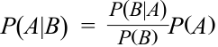
where
trong đó:
P ( A ) = 0.20 = probability of failure
$P(A) = 0.20 =$ xác suất vỡ nợ
P ( B ) = 0.70 = probability of a “good” rating
$P(B) = 0.70 =$ xác suất có xếp hạng “tốt”
P ( B | A ) = 0.50 = probability of a “good” rating given failure
$P(B | A) = 0.50 =$ xác suất có xếp hạng “tốt” khi biết đã vỡ nợ
With these estimates, the probability of failure given a “good” rating is
P_ ( B | A ) P_ ( A | B ) = P( B)P(A) = 0.700.50 × 0.20 = 0.143
Với các ước lượng này, xác suất vỡ nợ khi biết có xếp hạng “tốt” là:
If the analyst uses the bankruptcy prediction model as a guide, the probability of failure declines from 20 percent to 14.3 percent.
- In a typical year, 5 percent of all CEOs are fired for “performance” reasons. Assume that CEO performance is judged according to stock performance and that 50 percent of stocks have above-average returns or “good” performance. Empirically, 30 percent of all CEOs who were fired had “good” performance. Using Bayes’ formula, what is the probability that a CEO will be fired given “good” performance? (Hint, let P ( A ) be the probability of a CEO being fired, P ( B ) be the probability of a “good” performance rating, P ( B | A ) be the likelihood of a “good” performance rating given that the CEO was fired, and P ( A | B ) be the likelihood of the CEO being fired given a “good” performance rating.)
-
A. 1.5 percent
-
B. 2.5 percent
Nếu chuyên viên phân tích sử dụng mô hình dự báo phá sản làm chỉ dẫn, xác suất vỡ nợ giảm từ 20 phần trăm xuống còn 14.3 phần trăm.
C. 3.0 percent
- Trong một năm điển hình, 5 phần trăm tổng số CEO bị sa thải vì lý do “hiệu quả hoạt động” (“performance”). Giả sử hiệu quả hoạt động của CEO được đánh giá theo hiệu quả hoạt động của cổ phiếu và 50 phần trăm cổ phiếu có tỷ suất sinh lợi trên trung bình hay hiệu quả hoạt động “tốt”. Theo số liệu thực nghiệm, 30 phần trăm trong tổng số các CEO bị sa thải có hiệu quả hoạt động “tốt”. Sử dụng công thức Bayes, xác suất một CEO sẽ bị sa thải khi biết có hiệu quả hoạt động “tốt” là bao nhiêu? (Gợi ý: gọi $P(A)$ là xác suất một CEO bị sa thải, $P(B)$ là xác suất được đánh giá hiệu quả hoạt động “tốt”, $P(B | A)$ là khả năng có đánh giá hiệu quả hoạt động “tốt” khi biết CEO đã bị sa thải, và $P(A | B)$ là khả năng CEO bị sa thải khi biết có đánh giá hiệu quả hoạt động “tốt”.)
-
A. 1.5 phần trăm
-
B. 2.5 phần trăm
-
C. 3.0 phần trăm
Solution:
Lời giải:
C is correct. With Bayes’ formula, the probability of the CEO being fired given a “good” rating is
C là đáp án đúng. Với công thức Bayes, xác suất CEO bị sa thải khi biết có đánh giá “tốt” là:
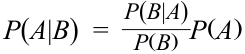
where
trong đó:
P ( A ) = 0.05 = probability of the CEO being fired
$P(A) = 0.05 =$ xác suất CEO bị sa thải
P ( B ) = 0.50 = probability of a “good” rating
$P(B) = 0.50 =$ xác suất có đánh giá “tốt”
P ( B | A ) = 0.30 = probability of a “good” rating given that the CEO is fired
$P(B | A) = 0.30 =$ xác suất có đánh giá “tốt” khi biết CEO bị sa thải
- With these estimates, the probability of the CEO being fired given a “good” rating is
Với các ước lượng này, xác suất CEO bị sa thải khi biết có đánh giá “tốt” là:
P_ ( B | A ) P_ ( A | B ) = P( B)P(A) = 0.500.30 × 0.05 = 0.03
Although 5 percent of all CEOs are fired, the probability of being fired given a “good” performance rating is 3 percent.
Mặc dù 5 phần trăm tổng số CEO bị sa thải, nhưng xác suất bị sa thải khi biết có đánh giá hiệu quả hoạt động “tốt” là 3 phần trăm.
~~PRACTICE PROBLEMS~~
BÀI TẬP THỰC HÀNH (PRACTICE PROBLEMS)
1. An analyst developed two scenarios with respect to the recovery of USD100,000 principal from defaulted loans:
1. Một chuyên viên phân tích đã xây dựng hai kịch bản liên quan đến việc thu hồi USD 100,000 vốn gốc từ các khoản vay bị vỡ nợ:
| Scenario | Probability of Sce- nario (%) |
Amount Recovered (USD) |
Probability of Amount (%) |
|---|---|---|---|
| 1 | 40 | 50,000 | 60 |
| 30,000 | 40 | ||
| 2 | 60 | 80,000 | 90 |
| 60,000 | 10 |
| Kịch bản (Scenario) | Xác suất của kịch bản (Probability of Scenario) (%) | Số tiền thu hồi được (Amount Recovered) (USD) | Xác suất của số tiền (Probability of Amount) (%) |
|---|---|---|---|
| 1 | 40 | 50,000 | 60 |
| 30,000 | 40 | ||
| 2 | 60 | 80,000 | 90 |
| 60,000 | 10 |
The amount of the expected recovery is closest to which of the following?
Số tiền thu hồi kỳ vọng gần nhất với mức nào sau đây?
A. USD36,400.
-
B. USD55,000.
-
C. USD63,600.
-
A. USD 36,400.
-
B. USD 55,000.
-
C. USD 63,600.
2. The probability distribution for a company’s sales is:
2. Phân phối xác suất đối với doanh thu của một công ty như sau:
| Probability | Sales (USD, millions) |
|---|---|
| 0.05 | 70 |
| 0.70 | 40 |
| 0.25 | 25 |
| Xác suất (Probability) | Doanh thu (Sales) (USD, triệu) |
|---|---|
| 0.05 | 70 |
| 0.70 | 40 |
| 0.25 | 25 |
The standard deviation of sales is closest to which of the following?
A. USD9.81 million.
Độ lệch chuẩn của doanh thu gần nhất với mức nào sau đây?
-
B. USD12.20 million.
-
C. USD32.40 million.
-
A. USD 9.81 triệu.
-
B. USD 12.20 triệu.
-
C. USD 32.40 triệu.
~~SOLUTIONS~~
LỜI GIẢI (SOLUTIONS)
-
C is correct. If Scenario 1 occurs, the expected recovery is 60% (USD50,000) + 40% (USD30,000) = USD42,000, and if Scenario 2 occurs, the expected recovery is 90% (USD80,000) + 10% (USD60,000) = USD78,000. Weighting by the probability of each scenario, the expected recovery is 40% (USD42,000) + 60% (USD78,000) = USD63,600. Alternatively, first calculating the probability of each amount occurring, the expected recovery is (40%)(60%)(USD50,000) + (40%)(40%)(USD30,000) + (60%)(90%)(USD80,000) + (60%)(10%)(USD60,000) = USD63,600.
-
A is correct. The analyst must first calculate expected sales as 0.05 × USD70 + 0.70 × USD40 + 0.25 × USD25 = USD3.50 million + USD28.00 million + USD6.25 million = USD37.75 million.
-
C là đáp án đúng. Nếu Kịch bản 1 xảy ra, số tiền thu hồi kỳ vọng là $60\%(\text{USD } 50,000) + 40\%(\text{USD } 30,000) = \text{USD } 42,000$, và nếu Kịch bản 2 xảy ra, số tiền thu hồi kỳ vọng là $90\%(\text{USD } 80,000) + 10\%(\text{USD } 60,000) = \text{USD } 78,000$. Nhân trọng số theo xác suất của mỗi kịch bản, số tiền thu hồi kỳ vọng là $40\%(\text{USD } 42,000) + 60\%(\text{USD } 78,000) = \text{USD } 63,600$. Hoặc cách khác, trước tiên tính xác suất xảy ra của từng mức tiền, số tiền thu hồi kỳ vọng là $(40\%)(60\%)(\text{USD } 50,000) + (40\%)(40\%)(\text{USD } 30,000) + (60\%)(90\%)(\text{USD } 80,000) + (60\%)(10\%)(\text{USD } 60,000) = \text{USD } 63,600$.
-
A là đáp án đúng. Trước tiên chuyên viên phân tích phải tính doanh thu kỳ vọng là $0.05 \times \text{USD } 70 + 0.70 \times \text{USD } 40 + 0.25 \times \text{USD } 25 = \text{USD } 3.50\text{ triệu} + \text{USD } 28.00\text{ triệu} + \text{USD } 6.25\text{ triệu} = \text{USD } 37.75\text{ triệu}$.
After calculating expected sales, we can calculate the variance of sales:
Sau khi tính doanh thu kỳ vọng, chúng ta có thể tính phương sai của doanh thu:
σ2 (Sales)
- = P (USD70)[USD70 – E (Sales)]2 + P (USD40)[USD40 – E (Sales)]2 + P (USD25) [USD25 – E (Sales)]2
= 0.05(USD70 – 37.75)2 + 0.70(USD40 – 37.75)2 + 0.25(USD25 – 37.75)2
-
= USD52.00 million + USD3.54 million + USD40.64 million
-
= USD96.18 million.
The standard deviation of sales is thus σ = (USD96.18)1/2 = USD9.81 million.
Do đó, độ lệch chuẩn của doanh thu là $\sigma = (\text{USD } 96.18)^{1/2} = \text{USD } 9.81\text{ triệu}$.